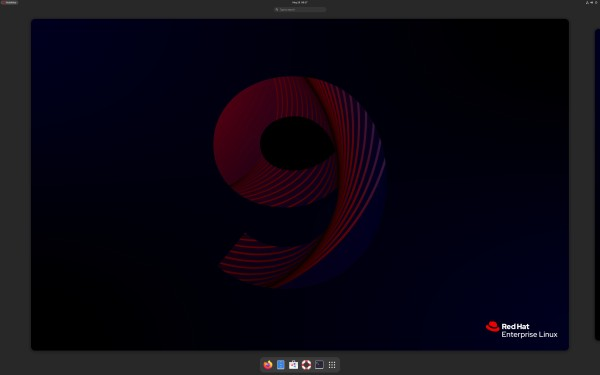

The Secure

Some History
Red Hat Linux was created by Marc Ewing in 1993, and was called "Red Hat" because of his love of wearing his Grandfathers red Cornell lacrosse cap.
In 1994 Bob Young was selling CDs of Red Hat Linux, and continued to sell out so many times, that he joined forces with Ewing
to create Red Hat Software in 1995. Fast forward a few years and in 2001 Red Hat discontinued the Red Hat Linux line, and replaced
it with Red Hat Enterprise Linux (RHEL), which opperates on a subscription model, primarily targeting Linux users in the enterprise world.
This makes Red Hat one of the only Linux Distributions that you have to pay for, but it is also one of the most secure and stable distros.
Using Redhat
Red Hat Linux comes with the GNOME desktop environment, but just like most Linux distros, you install whatever user experiance you want.
However, I think that you'll find most Red Hat Linux installs are operated from a purely command line interface. You may be supprised to
know that most Red Hat installs will never see a monitor hooked up to it, as Red Hat is most commonly used in server environments. It is
also not inconceivable that you have used Red Hat Linux without even knowing it, as it could be serving up this very website you are
viewing right now.
As Red Hat is an enterprise Linux system, it needs to be incredibly secure and stable. This is why Red Hat has a team of developers that ensure
Red Hat complies with industry standards and regulations, and nessecitates the subscription model that comes with it. Red Hat
is not intended for home users, but has distributions based on it that are free to use like
Rocky Linux.
Wrapping Up
While Red Hat is an incredibly powerful Linux distro, it is not neccecarily intended for home use. It's subscription model and focus on security
and stability however make it a great choice for enterprise environments. If you are looking to get into the world of Linux from a distro related
to Red Hat, I'd like to recommend Fedora. Fedora is a great distro for home users, developers and gamers alike. Bazzite is another great disto
for gamers, and is based on Fedora. If you still feel you need to experiance Red Hat, you can always try out Rocky Linux, which is completely
free.